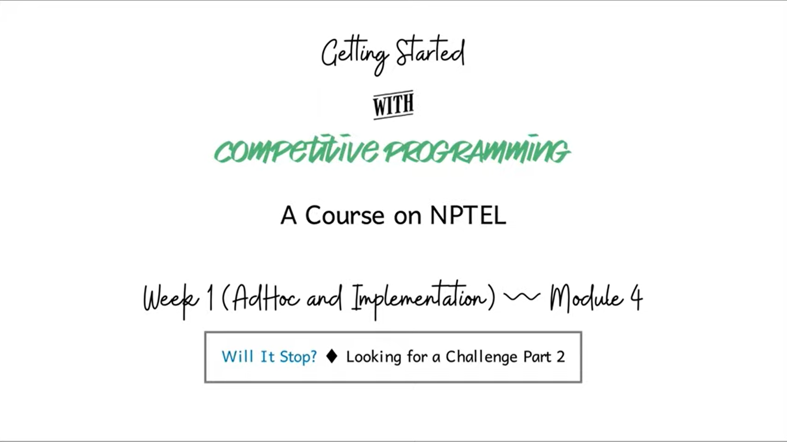
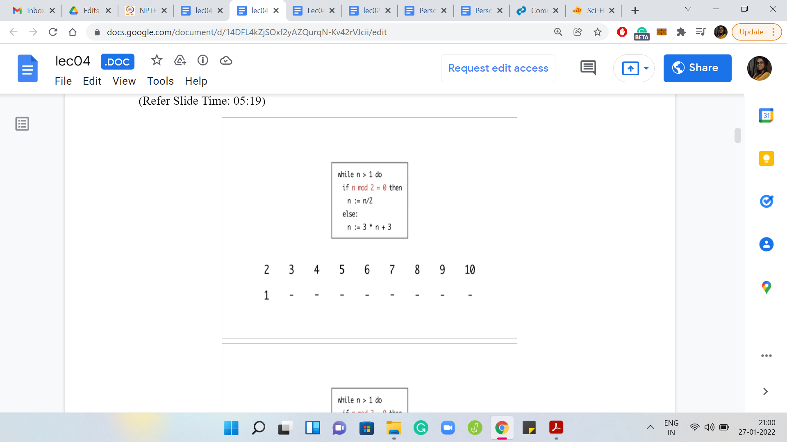
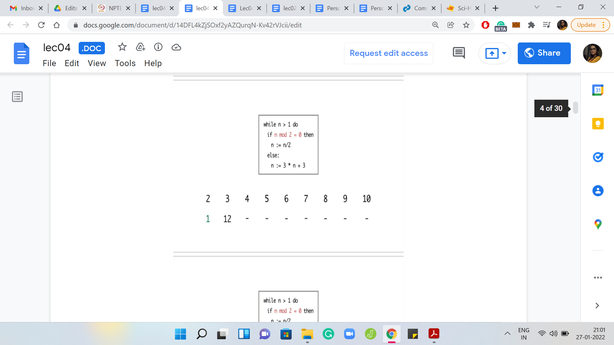
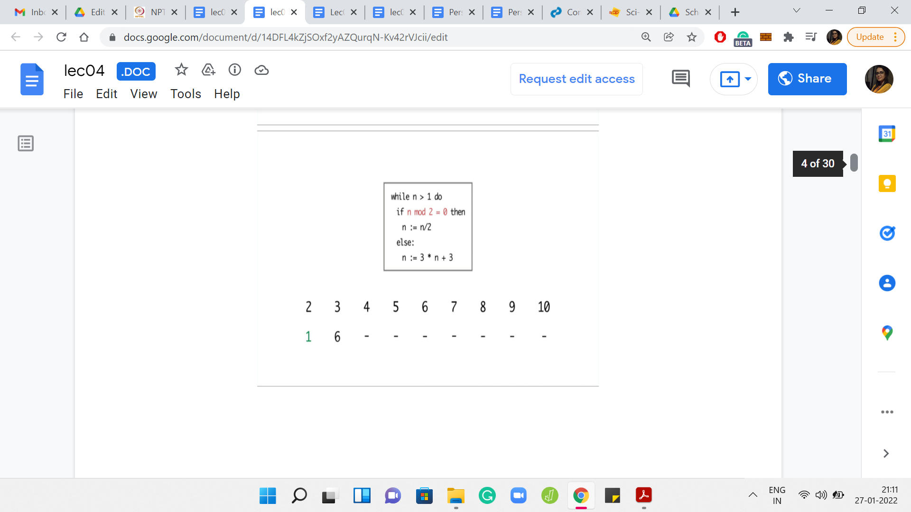
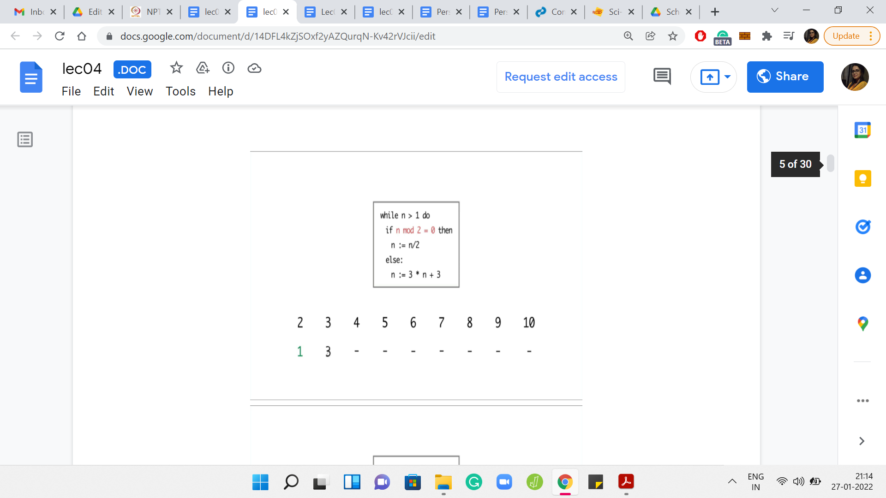
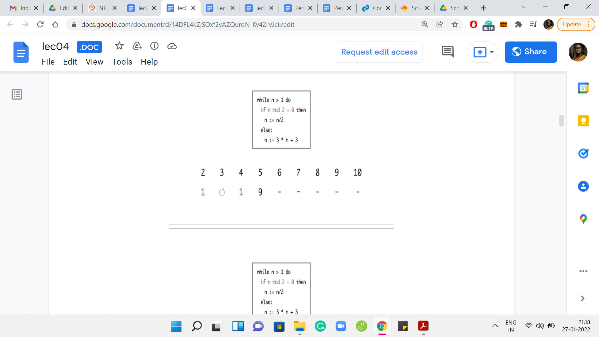
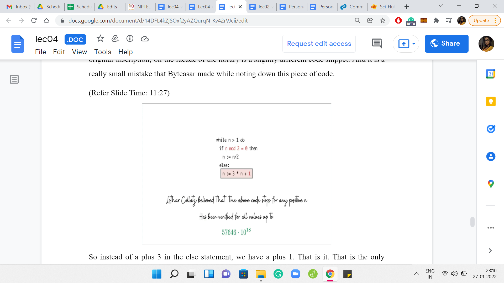
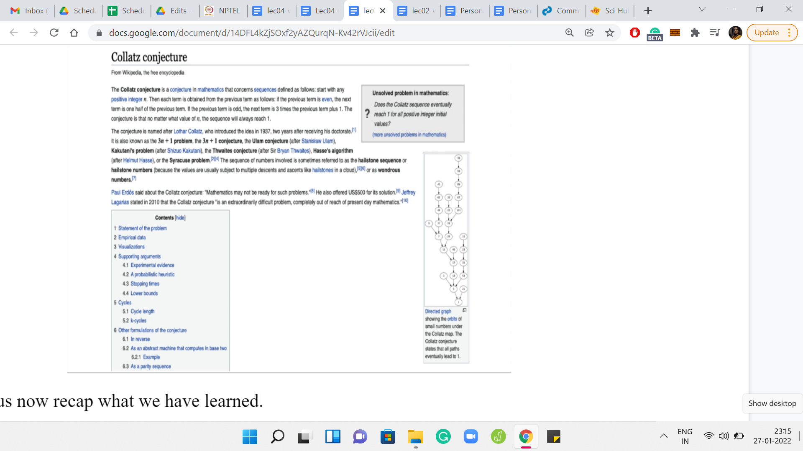
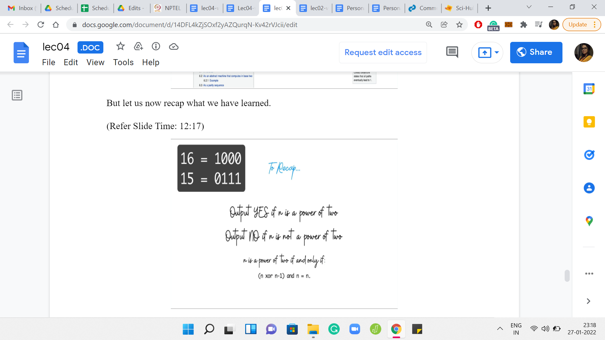

Ad hoc and Implementation - Module 4 (Will It Stop?)
Lecture - 04
Ad hoc and Implementation - Module 4 (Will It Stop?)
Welcome to the final module of the first week on AdHoc and Implementation-based problems. I do hope that you have had a good time solving the problems that we have showcased so far in this week. And, as usual, this is a friendly reminder that if you are stuck anywhere at all, then please do join us in the Discord community that has been set up exclusively for this course. Now, in this module, we will be talking about a fun problem called, Will It Stop?
(Refer Slide Time: 00:43)

This problem features in a really nice compendium of contest problems called looking for a challenge, Volume 2. And at the time of this recording, this book is freely available from the book’s website. So, you can find the link in the description below, as well as on the course homepage. I should, perhaps, mention that this book consists of model solutions to problems that featured in the Polish College at programming contests, the ones that took place between 2011 and 2014.
And while this is an excellent collection of problems, if you are just starting out on your competitive programming journey, you might find that they are a little more advanced than what you are prepared for right now. Do not worry about it, and definitely come back to them later, when you do have the background to appreciate some of the other problems. The problem that we are featuring in this video is problem C, and it, fortunately, requires no specific background. And it is a really cute problem. So, let us get right to it.
(Refer Slide Time: 01:43)
Let us begin by taking a look at the problem statement without the story for now. So, here is the task at hand. We are given the following program.

You can see that it is a snippet of code that involves a while loop and a number n. And it seems to be doing something different based on whether the number n is even or odd, to begin with. Specifically, if the number n is even then it seems to be getting halved. And if the number is odd, then it is roughly getting tripled. Specifically, it is transforming as 3 * n + 3.
So, at a high level, what is happening is that the number is either becoming smaller or bigger based on whether it was even or odd, to begin with. You can probably already imagine that there might be values of n for which this while loop just goes on forever and the program never terminates. It turns out that this is precisely our task.
We are given a number n as input. This number can range anywhere between 2 and 1014, which is just to say that this can be a pretty big number. And we have to identify whether this code that you are seeing on your screen right now terminates when n is given to it as input.
What would be the most natural way of trying to solve this problem? Well, it might occur to you that we should just try to simulate this code snippet here on the given value of n and see if it terminates or not. That is fairly natural, but you can probably already see why it is going to be problematic. Of course, if your code actually terminates on n within a small number of steps, then you can confidently conclude that the program indeed terminates.
However, suppose your code runs for, maybe, 1000 steps, 10,000 steps, or even 100,000 steps, and it is still not terminated. Now, can you still confidently conclude that the program will never terminate? Well, these early steps may not be a good indicator of what happens ultimately. It is possible that if you had waited for another 3 steps, the program would have terminated.
It is also possible that you needed to wait for another 10 billion steps before the program actually did terminate. So, you can see why this is going to be dicey. Fundamentally, the issue is that just because your program did not terminate in the first so many steps that is not enough evidence to conclude that it is never going to terminate. So, it seems like the real task for us is to identify some pattern on the numbers n for which this code does not terminate, and then use that pattern to answer the question.
How do we discover this pattern? Maybe, we can go back to the simulation approach we were discussing. Yes, I know I just said that it is not going to work. But it is not going to hurt for a bit of a trial-and-error approach. Let us replicate this code in Python or whatever programming language you are using right now. And just run it for some small values of n.
Pick a threshold that you like, say 100,000 steps, and let us just identify those values of n for which this program does not terminate even within 100,000 steps. We can flag those values as potentially being those for which the program never terminates. At this point, this is just going to be an educated guess. But it is going to be a good starting point to investigate further. I would really encourage you to try this yourself, and join me to discuss what we observed.
(Refer Slide Time: 05:19)









Eventually,

I ran the program for values of n between 2 and 10. For n = 2, the program terminated in just 1 step. But for 3, it seems like the program is getting into the cycle of values between 3, 6, and 12. It is seemingly going on forever. For 4, the program terminates in just 2 steps. But for 5, again, the program eventually gets into the same cycle that we observed for the number 3.
Now 6 was interesting because so far, the program seems to be terminating on even numbers and non-terminating on odd numbers. So, we may be tempted to conjecture that that is the pattern. But for 6, the program is again getting into this ‘3, 6, 12’ kind of cycle. For 7, the program again gets into the sort of a loop that shows no sign of stopping.
But for the next number, which is 8, the program again terminates in just 3 steps. For 9 and 10, you see that the program again gets into a cycle and shows no signs of stopping. So, at this point, can you identify a pattern to, at least, the 3 numbers that we have seen so far on which the program seems to terminate? If you run this program for even more values of n, then you may have a larger stash of numbers on which to guess a pattern.
From what we have seen so far, it looks like all the numbers on which the program did terminate happened to be powers of 2. So that seems like a very tempting conjecture to make. Perhaps the program only terminates on powers of 2.
(Refer Slide Time: 07:02)

It is reasonably easy to see that if you have a power of 2, then the program does terminate. It is because the program is successively shaving off powers of 2 from n, till the number becomes 1. For instance, if to begin with n was the rth power of 2, then after the first iteration, it will become the r-1th power of 2. After the second iteration, it will become the r-2th power of 2 and so on. And after r iterations, the number becomes 2 to the 0, which is 1, at which point the program terminates.
To summarize, if n was the rth power of 2, then the program terminates in r iterations. We also saw this with the examples. When n was equal to 2, then we terminated after 1 iteration. When n was 4, we terminated and 2, and when n was 8, we terminated in 3 iterations. So, this case is abundantly clear. Now let us consider the other possibility, which is that n is not a power of 2. When n is not a power of 2, let us split things up into 2 further scenarios.
(Refer Slide Time: 08:04)

What if n is not a power of 2, and is odd? In this case, notice that n is always going to be a multiple of 3. Indeed, in the very first step, n gets transformed into 3*n+3. At this point, it is clearly a multiple of 3. Since in future iterations, we never divide by 3, it should be clear that n is always going to be a multiple of 3. For this reason, it is never going to reach a value of 1, and the program is going to run forever.
What happens if n is not a power of 2 but it is even, to begin with? Then well, let us just consider the prime factorization of n. It is going to have some powers of 2, and then some other factors as well, because we explicitly said that n is not just a power of 2. So, as long as n is divisible by 2, the program is going to enter the first branch of the if statement. It is going to, again, successively shave off the powers of 2. But when it has no factors of 2 left, you are left with a number that, by definition, is odd. You are back to the previous case, where n is not a power of 2, and it is odd. From here on out, it is going to go on forever.
What we have argued after making an educated guess is that, indeed, the program does not stop if and only if n is not a power of 2. So, the program that you have to write at this point is really simple. You just have to check if n is a power of 2 or not. And one way to do that is to just try and successively divide by n and see where you get stuck.
If you go all the way to one then n was a power of 2, but if you stop short of something that is different from 1 then n is not a power of 2. If you are used to bit manipulation tricks, then there is a faster way of checking if n is a power of 2 or not. We will mention this when we get to the summary at the end. Before we go further though, let me just show you the original problem statement so that you can take a look at the story there.
I know that normally we are in a big rush to just somehow get rid of this story and quickly identify the abstractions involved. But in this case, I think the story has a little bit of interesting trivia. So, I want to tell you about it, especially now that we have more or less solved the problem.
(Refer Slide Time: 10:31)

So, here is how the problem statement goes. Byteasar was wandering around the library of the University of Warsaw. At one of its facades, he noticed a piece of a program with an inscription: Will it stop? The question seemed interesting, so Byteasar tried to tackle it after returning home. Unfortunately, when he was writing down the piece of code, he made a mistake. The rest of it is what we have discussed so far. But this might make you curious about a couple of things. First of all, is there such an inscription at the facades of the library of the University of Warsaw? It turns out that there is indeed such an inscription. Did Byteasar actually make a mistake while noting it down? It turns out that, yes, the original inscription, on the facade of the library is a slightly different code snippet. It is a really small mistake that Byteasar made while noting down this piece of code.
(Refer Slide Time: 11:27)

So instead of a +3 in the else statement, we have a +1. That is the only difference, but it turns out that it massively changes the nature of the problem. The mathematician Lothar Collatz believes that this code stops for any value of n. It turns out that as of now, nobody really knows if this is true. Of course, people have tried this computationally, apart from in other ways.
It has been verified that the program does terminate for some fairly large values of n. But we do not know if this is the case for every n or not. This is a fascinating conjecture with a lot of history. If you are interested in this, then do look up the Collatz conjecture. I am sure it will be a very interesting rabbit hole for you to explore. But let us now recap what we have learned.
(Refer Slide Time: 12:12)


For the version of the code that we saw in the problem statement, we can say yes, if n is a power of 2, and we can say no if n is not. I promised you a bit manipulation trick that would help you identify if n is a power of 2 or not. And here it is. You can test if n is a power of 2 or not by just taking the XOR of n and n-1, and doing an AND with n and check if that is n.
So, you can probably see right away that if n is a power of 2, then this equation is satisfied. When you do n XOR n-1, you get essentially all ones. When you add that with n, then only the first, the most significant bit is the only one that survives, and you get back n. However, it is a little more work to check that this equation actually fails for any value of n, which is not a power of 2.
It is a fun little exercise so I will not spoil it for you. But for now, if you just want to record it as a trick that you can use, then by all means, please do make a note of it. So, all that remains is to actually code this up. As you can imagine, for this problem, the coding bed is really simple, but let us just go through it.
(Refer Slide Time: 13:33)


So, here is the page, which has the problem statement. This is a new platform compared to the ones that you have seen so far. If you are here for the first time, on the top right, you will see a link, which says login, as opposed to your username. If you do not have an account yet, then when you click on login, you will get a drop-down menu, which will also give you the opportunity to register.
It is a very simple registration form. So, you should have your account set up in a couple of minutes. It is completely automatic. Once you have done all that, please make sure to log in. The only reason I am recommending that you set up an account of your own is because you do need that to be able to actually make a submission. If you are not logged in, you will not be able to submit your code.
Let us just quickly recap the problem statement. The contents of the problem itself are exactly as we have discussed. Let us take a note of the input. There is only one line of input and that is the integer n. And the output well is yes or no, but notice that it is in Polish. So let us just take a note of the words: It is going to be TAK or NIE. Let us just make sure that that is what we output in our program. Otherwise, the tests are not going to pass.
Let us head over to the submission pane. Notice that you cannot, right away, select the programming language. But once you start typing in here, the drop-down does get activated. I am just going to pick Python because it is a simple program. It should not really make a difference, what programming language we use here. We take in the number n. Now we just have to test if it is a power of 2 or not. So let us use the bit manipulation trick that we just talked about. We want to do n XOR n-1. So, the bitwise XOR is the ^ symbol in Python, and the bitwise AND is a single & sign. We want to ask ourselves if this is true, and if it is, then we print TAK.
If it is not, then we print NIE. That should be the entire program. Notice that the editor interface here does not really have support for tabs. That is why, I am kind of typing out for spaces. You can, of course, also just code this in your favorite IDE and upload the file instead.
(Refer Slide Time: 16:33)

Let us just go ahead and make the submission to be sure. At this point, the status is pending. I have made a similar submission before. My current submission has run its course. It seems like it has a full score, which means all the tests passed, which is not surprising given that it was a really simple check that needed to be done.
So, there is not a whole lot of margin for error here. But do try this out, and see if you managed to also pass all the tests. You could try doing this the other way where you actually successively divide n by 2 and see if that is within the time limit. I believe that that approach also works just as well. Do give it a shot and let us know how it went for you. This was the final problem that we discussed in this week. We are looking forward to seeing you next week, and also over at Discord and the Google Groups. Thanks so much and talk soon. Bye for now!